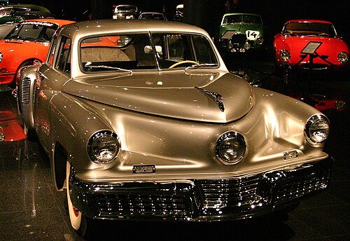

O Tucker 48, também conhecido como Tucker Torpedo, é um sedan fabricado pela "Tucker Corporation" a partir de 1948. Seu design foi criado por Preston Tucker e apenas 51 exemplares foram construídos, sendo que um deles faz parte do acervo do colecionador de automóveis brasileiro, Roberto Eduardo Lee, fundador do Museu Paulista de Antiguidades Mecânicas, na cidade de Caçapava, São Paulo. Seu perfil baixo e aerodinâmico propiciava uma velocidade máxima de 193 km/h, tracionado por um motor de seis cilindros e 168 cv de potência. Possuía um terceiro farol no centro que vira acompanhando a direção do volante, para ajudar a iluminar nas curvas.